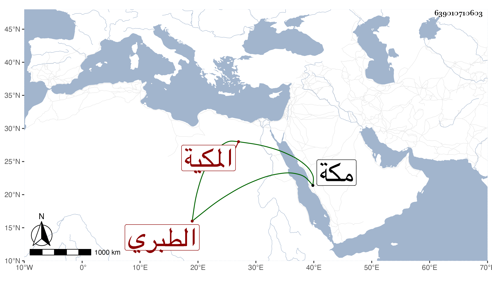

0902Sakhawi.DawLamic.ITO20230111-ara1.EIS1600.639010710603
Biography ID: 639010710603
513
علما ابنة أبي اليمن محمد بن أحمد بن الرضى إبراهيم بن محمد بن إبراهيم أم محمد الطبري المكية اخت حسنة الماضية ، امها أم هانئ ابنة أبي العباس بن عبد المعطي . ولدت سنة أربع وسبعين وسبعمائة أو التي قبلها وسمعت على عمتيها الفاطمتين أم الحسن وام الحسين ابتي أحمد بن الرضى ، وأجاز لها النشاورى وابن حاتم وغيرهما وتزوجها يوسف بن أبي القسم اليماني الحنيفي وولدت له أولادا ثم طلقها ، وكانت خيرة دينة لكن تعتريها حالة يقل فيها ضبطها ، روى عنها النجم ابن فهد ، وماتت في جمادى الآخرة سنة ست وعشرين بمكة .
